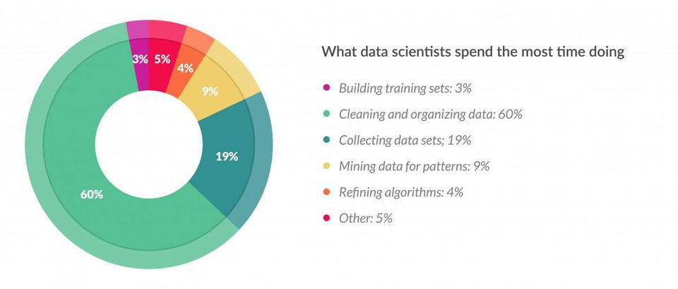
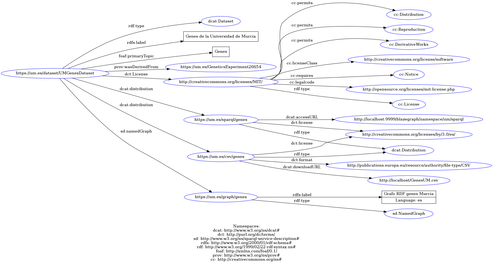

Publicación de datos FAIR
Mikel Egaña Aranguren
mikel-egana-aranguren.github.io

Mikel Egaña Aranguren
Mikel Egaña Aranguren
mikel-egana-aranguren.github.io
https://github.com/mikel-egana-aranguren/UM-Bioinformatics-MSc-FAIR-data

git clone
https://github.com/mikel-egana-aranguren/
UM-Bioinformatics-MSc-FAIR-data.git
git@github.com:mikel-egana-aranguren/
UM-Bioinformatics-MSc-FAIR-data.git
Principios FAIR: una mejor publicación de datos (Científicos)
Para humanos y máquinas
No es un estándar
No promueven una tecnología concreta
Son principios guía
No se cumplen de manera binaria (aprobado o no)
Un sistema siempre puede ser "más FAIR"
80% del tiempo buscando, filtrando, masajeando e integrando datos
La reproducibilidad es crucial en ciencia:
Crisis de la reproducibilidad debido a:
Principios FAIR para una mejor publicación de (meta)datos
Cada vez más agencias gubernamentales exigen un DMP (Data Management Plan) basado en FAIR para financiar investigación
Grandes empresas como Novartis, Bayer, etc. usan principios FAIR para publicación interna de datos
Findable
Accesible
Interoperable
Reusable
F1. (Meta)Data are assigned a globally unique and persistent identifier
F2. Data are described with rich metadata (R1)
F3. Metadata clearly and explicitly include the identifier of the data it describes
F4. (Meta)Data are registered or indexed in a searchable resource
A1. (Meta)Data are retrievable by their identifier using a standardized communications protocol
A1.1 The protocol is open, free, and universally implementable
A1.2 The protocol allows for an authentication and authorization procedure, where necessary
A2. Metadata are accessible, even when the data are no longer available
I1. (Meta)Data use a formal, accessible, shared, and broadly applicable language for Knowledge Representation
I2. (Meta)Data use vocabularies that follow FAIR principles
I3. (Meta)Data include qualified references to other (Meta)Data
R1. (Meta)Data are richly described with a plurality of accurate and relevant attributes
R1.1. (Meta)Data are released with a clear and accessible data usage license
R1.2. (Meta)Data are associated with detailed provenance
R1.3. (Meta)Data meet domain-relevant community standards
Las tecnologías para implementar los principios FAIR no son los principios FAIR
Data should be identified using globally unique, resolvable, and persistent identifiers, and should include machine-actionable contextual information that can be indexed to support human and machine discovery of that data
Dominios como um.es (€)
Registros
Algoritmos (UUID)
etc.
Infraestructura propia (€€€): por ejemplo W3C URI Persistence Policy
Registros: http://identifiers.org, http://www.doi.org, https://orcid.org/
URI: Uniform Resource Identifier (RFC 3986)
Identifica un recurso (URL: Localiza un documento)
HTTP: podemos usar HTTP para acceder (Resolver) a esa URI (dominio)
Identifiers for the 21st century: How to design, provision, and reuse persistent identifiers to maximize utility and impact of life science data McMurry JA, Juty N, Blomberg N, Burdett T, Conlin T, et al. (2017) PLOS Biology 15(6): e2001414. https://doi.org/10.1371/journal.pbio.2001414
Nuestro laboratorio de la UM ha descubierto un gen nuevo, PKD1, implicado en enfermedades renales de los humanos
La UM tiene un repositorio persistente de datos
URI del dataset: https://um.es/dataset/UMGenesDataset
URI de un gen: https://um.es/data/LDD773322
Añadir metadatos lo más detallados posible
Metadatos de contenido: a qué especies pertenecen los genes, la temática de los datos, etc.
Metadatos técnicos: cuándo se generaron los datos, como, por quién, etc.
Se usan ontologías (I1)
Repositorios de ontologías: Linked Open Vocabularies, OBO Foundry, BioPortal, BioSchemas, etc.
"https://um.es/dataset/UMGenesDataset was generated on 2020-12-10T13:00:07"
"https://um.es/dataset/UMGenesDataset is about genes"
"https://um.es/dataset/UMGenesDataset relates to humans"
etc.
Repositorios generales: Zenodo, DataDryad, Dataverse (Harvard Dataverse), etc.
Repositorios temáticos: UniProt, GenBank, etc.
Indexadores como Google
Google indexa de manera "básica" ...
... pero cada vez menos, gracias a Schema (Ontología muy ligera para describir datos en la web) y JSON-LD: Bioschemas
Hay que intentar publicar buenos metadatos para una indexación adecuada (por Google o cualquier agente que entienda las ontologías que usamos)
Identified data should be accessible, optimally by both humans and machines, using a clearly-defined protocol and, if necessary, with clearly-defined rules for authorization/authentication
Por ejemplo HTTPS
Por ejemplo HTTPS
Hacer explícitas las condiciones físicas de acceso, para humanos y máquinas
Datos protegidos por propiedad intelectual o privacidad (Ej. datos clínicos): no se publican los datos, sólo (algunos) metadatos y sus condiciones de acceso
Conservar datos es muy caro
Conservar metadatos es mucho más barato
Si los datos ya no existen, deberíamos ser explícitos sobre ello, por ejemplo para evitar búsquedas innecesarias
Data becomes interoperable when it is machine-actionable, using shared vocabularies and/or ontologies, inside of a syntactically and semantically machine-accessible format
Las máquinas también tienen que entender los (meta)datos
Por ejemplo OWL (Web Ontology Language)
Las ontologías usadas para describir los datos también se tienen que publicar siguiendo los principios FAIR
Los (meta)datos son solo útiles cuando los integramos con otros datos
Enlaces explícitos a otros datos: "part-of", "catalyses", etc.
Las máquinas entienden el significado de esa relación
Reusable data will first be compliant with the F, A, and I principles, but further, will be sufficiently well-described with, for example, contextual information, so it can be accurately linked or integrated, like-with-like, with other data sources. Moreover, there should be sufficiently rich provenance information so reused data can be properly cited
R1.1. (Meta)data are released with a clear and accessible data usage license
R1.2. (Meta)data are associated with detailed provenance
R1.3. (Meta)data meet domain-relevant community standards
F2 es para descubrir datos, R1 es para decidir si los datos son útiles
Describe the scope of your data: for what purpose was it generated/collected?
Mention any particularities or limitations about the data that other users should be aware of
Specify the date of generation/collection of the data, the lab conditions, who prepared the data, the parameter settings, the name and version of the software used
Is it raw or processed data?
Ensure that all variable names are explained or self-explanatory (i.e., defined in the research field's controlled vocabulary)
Clearly specify and document the version of the archived and/or reused data
I es sobre interoperabilidad técnica; R1.1 es sobre interoperabilidad legal
Los datos deben tener una licencia clara y explícita para humanos y máquinas
Por ejemplo, Creative Commons RDF
¿Cómo, quién, cuándo, por qué generó los datos?
Respetar las buenas prácticas, estándares, vocabularios etc. de la comunidad científica que trabaja con esos datos
Por ejemplo FAIR Sharing Standards
A design framework and exemplar metrics for FAIRness
Hay muchas maneras de publicar datos FAIR, por ejemplo:
Linked Data ofrece una solución técnica para principios FAIR
Pero no suficiente: hay que producir contenido FAIR (Metadatos, Ontologías, URIs, etc.)
Utilizar maquinaria Web (URIs HTTP), para identificar y localizar entidades
Utilizar un modelo de datos común, tripleta RDF, para integrar datos en los que aparecen esa entidades
base de datos universal
Descubrimiento e integración de datos
Programación de agentes que consuman los datos
Actualización de datos mediante enlaces
Consultas complejas
Con Linked Data cualquiera puede publicar datos y enlazarlos a otros datos
El conjunto de datos abiertos publicados mediante Linked Data forma la «nube Linked Open Data»
Cada vez más instituciones públicas de todo el mundo usan Linked Data para publicar sus datos
curl -L -H "Accept: text/html" "http://dbpedia.org/resource/Berlin"
curl -L -H "Accept: application/rdf+xml" "http://dbpedia.org/resource/Berlin"
curl -L -H "Accept: text/html" "http://sws.geonames.org/2950159/"
curl -L -H "Accept: application/rdf+xml" "http://sws.geonames.org/2950159/"
URI identifica a entidad; URLs localizan diferentes representaciones (RDF, HTML, ...) de la entidad
Descripción de la entidad (RDF, HTML, ...) ≠ entidad
HTTP URI dereferenciable: cuando se busca una URI, deberia devolver una descripción adecuada del objeto que identifica esa URI
"FAIRificar" un dataset de ejemplo
Proceso vertical: intentar cubrir todos los pasos técnicos, sin entrar en detalles de contenidos
Ejemplos muy simples, nada realistas
GenesUM.csv (LinkedDataServer/data/)
GenesUM.nt (LinkedDataServer/data/)
GenesUM.nq (LinkedDataServer/data/)
Se basa en RDFLib
Otras herramientas posibles: YARRRML (Google Enterprise Knowledge Graph Entity Reconciliation Service),TARQL, OntoRefine, Open Refine, Eccenca CMEM, Apache Any23, etc.

A otras URIs
Manualmente, o con herramientas como SILK
Asignar una URI a nuestro dataset (F1): https://um.es/dataset/UMGenesDataset
Usar diferentes vocabularios como DCAT, VOID, PROV, FOAF, etc. para añadir metadatos
Named Graph: conjunto de triples que se identifica con una URI (RDF W3C)


Datos: CSV (GenesUM.csv), RDF (GenesUM.nq)
Metadatos: RDF (MetadataGenes.ttl)
Datos: CSV (Apache), RDF (Blazegraph/Trifid)
Metadatos: RDF (Blazegraph/Trifid)
java -server -Xmx4g -jar blazegraph.jar
(java -server -Xmx4g -Djetty.port=8181 -jar blazegraph.jar)
Configurar Trifid para que haga consultas SPARQL contra http://localhost:9999/blazegraph/namespace/um/sparql
Configuración: blazegraph-config.json
URIs:
/var/www/html/
¿Hemos conseguido implementar todos los principios FAIR?
¿En qué medida?
Reproducir en el servidor Google Cloud este proceso (Documentacion)
Incluir en Entregable de Explotación semántica de datos (Publicación de datos)